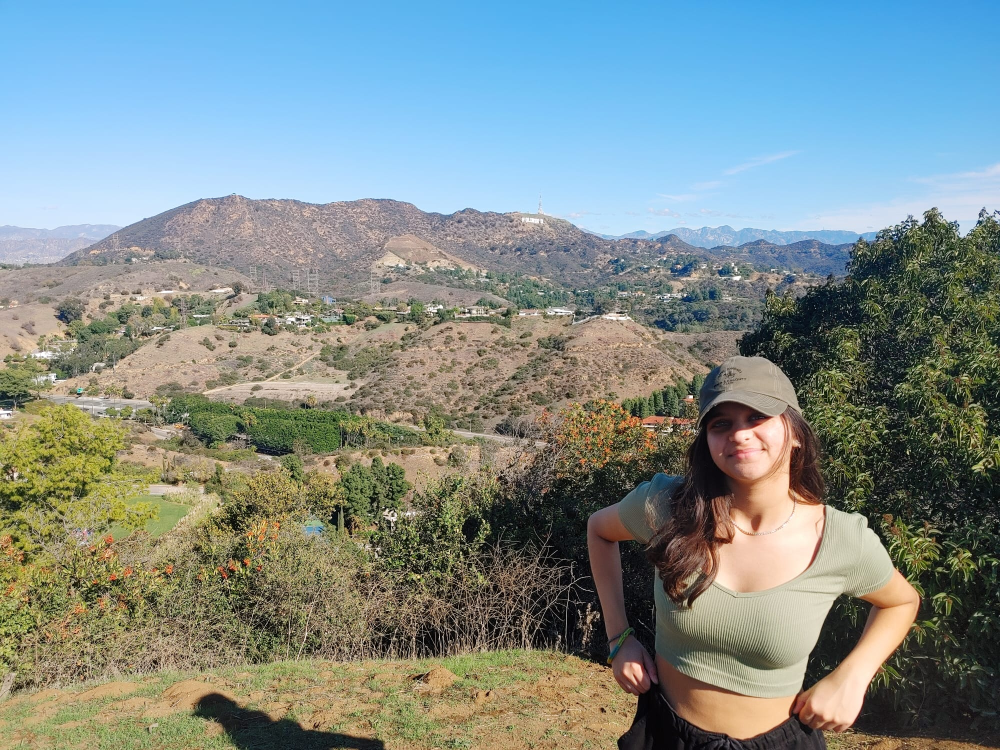

About Me
I am an academically-driven IB student at Cameron Heights Collegiate Institute with a strong background in math and computer science. My passion for problem-solving and exploring newer technologies has led me to create several side projects, including developing solutions for the Traveling Salesman Problem, creating a Sudoku solver and generator, and building a 2048 game and solver using heuristic algorithms in Python.
I am also an advocate for social causes, as evidenced by my involvement with Technovation's BikingBliss project, where my team and I developed an app in Scratch to encourage biking using Google Maps API. The app allowed the user to find bike trails, bike racks, biking rules in different areas, and to see how many calories they have burnt/how much pollution they have saved. We were proud to be the 2019 runner-ups at the Regional Pitch Event. My other interests span across various fields, from sports like basketball to creative arts like writing, all of which are shown through my numerous volunteer experiences.